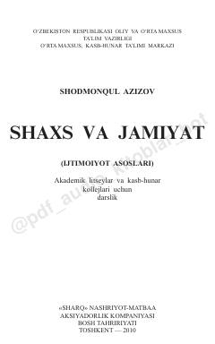

SVAkademik litsey va kollejlar uchun inson, shaxs va jamiyat haqidagi o'quv darsligi.
Ushbu darslik akademik litseylar va kasb-hunar kollejlari o'quvchilari uchun mo'ljallangan bo'lib, inson, shaxs, jamiyat va sivilizatsiya masalalarini qamrab oladi. Kitobda globallashuv jarayonlari, ijtimoiy-tarixiy rivojlanish bosqichlari hamda zamonaviy axborotlashgan jamiyatning shakllanishi ilmiy asosda yoritilgan.